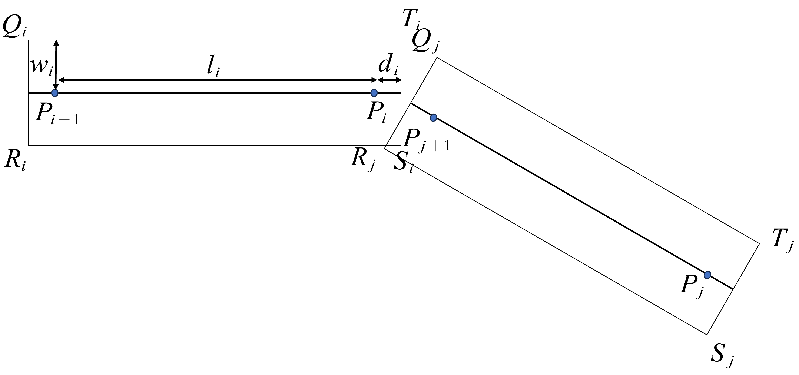
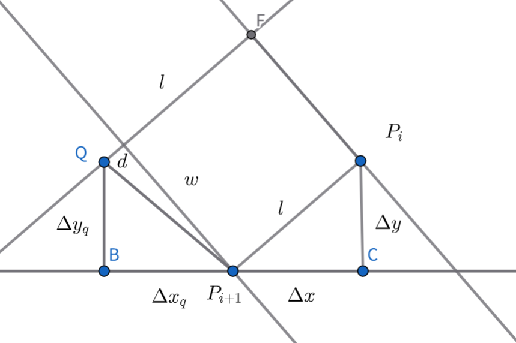

文件公式推导基于2024全国大学生数学建模竞赛A题讲评：板凳龙闹元宵 - 2024数学建模赛题讲评 - 中国大学生在线
等距螺旋线
等距螺旋线应为:
ρ=2πaθ+b
本题中b=0,因此简化为:
ρ=2πaθ
对龙头进行讨论,记t时刻龙头极角为θ0(t),则对dl和dθ有:
(这是参数方程求距离,在高数上有此公式)
dl=ρ(θ)2+ρ′(θ)2dθ=4π2a2(θ2+1)dθ=2πaθ2+1dθ
对于dl和dt有:
dl=0−v0dt
整理得:
2πaθ2+1dθ2πa∫θ0(0)θ0(t)1+θ2dθ=−v0dt=−v0t
对于∫θ2+1dθ有以下解法:
θdθ∫θ2+1dθ∫sec3tdt=tant=d(tant)=∫sectd(tant)=∫sec3tdt=sect⋅tant−∫tan2t⋅sectdt=sect⋅tant−∫sec3t−sectdt=sect⋅tant−∫sec3tdt+∫sectdt=sect⋅tant−∫sec3tdt+ln(sect+tant)=21(sect⋅tant+ln(set+tant))+C=21θ1+θ2+21ln(θ2+1+θ)+c
则,有
2πa∫θ0(0)θ0(t)1+θ2dθ=2πa(21(θ0(t)1+θ0(t)2+21ln(θ0(t)2+1+θ0(t)))−2πa(21θ0(0)1+θ0(0)2−21ln(θ0(0)2+1+θ0(0)))=−v0t
利用该公式可以求出每一个时刻θ0的极角.
对于第i条龙身的前把手，利用余弦定理有：
(li)2=ρi+12+ρi2−2ρi+1ρicos(θi+1−θi)
即
(li)2=ρi+12+ρi2−2ρi+1ρicos(θi+1−θi)=4π2a2[θi+12+θi2−2θiθi+1cos(θi+1−θi)]
根据每一个时刻可以求得龙头位置可以推导后面每一个结点的位置.
两侧同时对t求导得,
0=4π2a2(2θi+1dtdθi+1+2θidtdθi−2θiθi+1(−sin(θi+1−θi)(tdθi+1−tdθi))−2cos(θi+1−θi)(θitdθi+1+θi+1tdθi)
将tdθi+1放在一起,tdθi放在一起有(已经约去系数)
dtdθi+1(θi+1+θiθi+1sin(θi+1−θi)−θicos(θi+1−θi))+dtdθi(θi−θiθi+1sin(θi+1−θi)−θi+1cos(θi+1−θi))=0
化简得:
dtdθi+1=−θi+1−θiθi+1sin(θi+1−θi)+θicos(θi+1−θi)θi−θiθi+1sin(θi+1−θi)−θi+1cos(θi+1−θi)dtdθi
去一小段dt 则第i个龙身前把手其运动路径有
dldl∣vi∣=vidt=ρ(θi)2+ρ′(θi)2dθi=4π2a2(θ2+1)dθi=2πaθi2+1dθi=2πaθi2+1dtdθi
因此第i+1个速度为
∣vi+1∣=∣−θi+1−θiθi+1sin(θi+1−θi)+θicos(θi+1−θi)∣∣θi−θiθi+1sin(θi+1−θi)−θi+1cos(θi+1−θi)∣1+θi21+θi+12∣vi∣
碰撞模型：
碰撞时示意图如下所示

则可以将QTSR的坐标表示出来
首先是Q，有示意图如下：

设α,β,θ有
tanαtanθtanβr2xi−xi+1xi+1−xq=wd=ΔxqΔyq=ΔxΔy=d2+w2=Δx=Δxq
可以推导出：
Δy2+Δx2d2+w2tanαtanθtanβα+β+θsin(α+β)cos(α+β)Δxqxi+1−xqxqΔqyi+1−yq=l2=Δxq2+Δyq2=wd=ΔxqΔyq=ΔxΔy=2π=sinαcosβ+sinβcosα=rldΔx+wΔy=cosαcosβ−sinβsinα=rlwΔx−dΔy=rcosθ=rcos(2π−(α+β))=rsin(α+β)=ldΔx+wΔy=ld(xi−xi+1)+w(yi−yi+1)=xi+1−ld(xi−xi+1)+w(yi−yi+1)=l(l+d)xi+1−dxi+w(yi+1−yi)=l(l+d)xi+1−(l+d)xi+w(yi+1−yi)+lxi=xi+l(l+d)xi+1−(l+d)xi+w(yi+1−yi)=rsinθ=lwΔx−dΔy=lw(xi−xi+1)−d(yi−yi+1)其他部分以后有时间再写吧